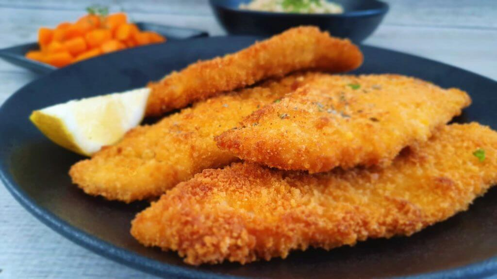
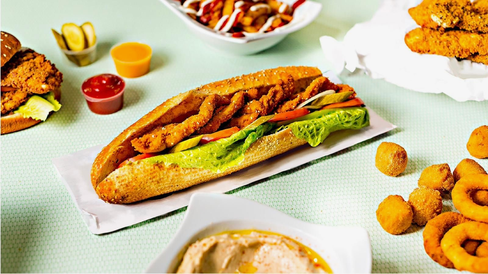

שניצלmore
שניצלmore
שניצל בגן יבנה
שניצלmore בגן יבנה הוא שניצל המתמחה בשניצלים בטעמים מיוחדים.
תפריט שלנו מציע לכם שניצל או בשרים בצלחת פיתה או באגט טריים.
(כמובן שאת הבגטים שלנו אנחנו אופים במקום!!!)
אז מה אתם אומרים מתחשק לכם שניצל פריך בטעמים?
בואו אלינו לבילוי טעים או הזמינו משלוח
המנות מוגשות עם תוספות, סלטים ורטבים לבחירה
